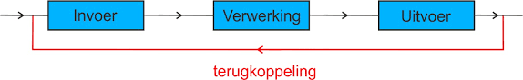

De informatie die een computer krijgt wordt in drie stappen verwerkt. Eerst wordt informatie ingevoerd. De invoer is een gegeven dat een computer gebruikt om te verwerken. Dit gegeven wordt ontvangen doordat iemand bijvoorbeeld een muis, microfoon of toetsenbord gebruikt. Daarna wordt de informatie verwerkt. Hiermee wordt bedoeld dat deze informatie wordt omgezet in een taal die de computer begrijpt: het binaire stelsel. Meer uitleg hierover op de pagina over het binaire stelsel. Tot slot de uitvoer. De uitvoer is het resultaat van deze verwerking. Dit is bijvoorbeeld wat we zien op het beeldscherm en horen door de luidsprekers.
